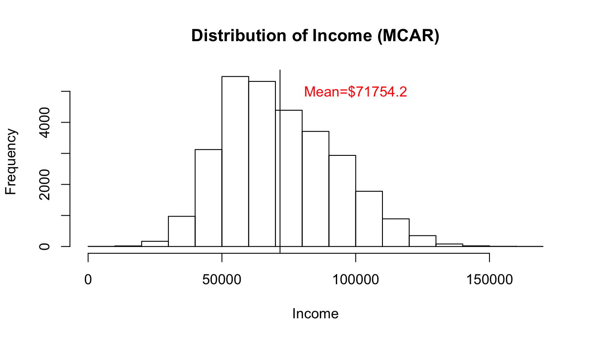
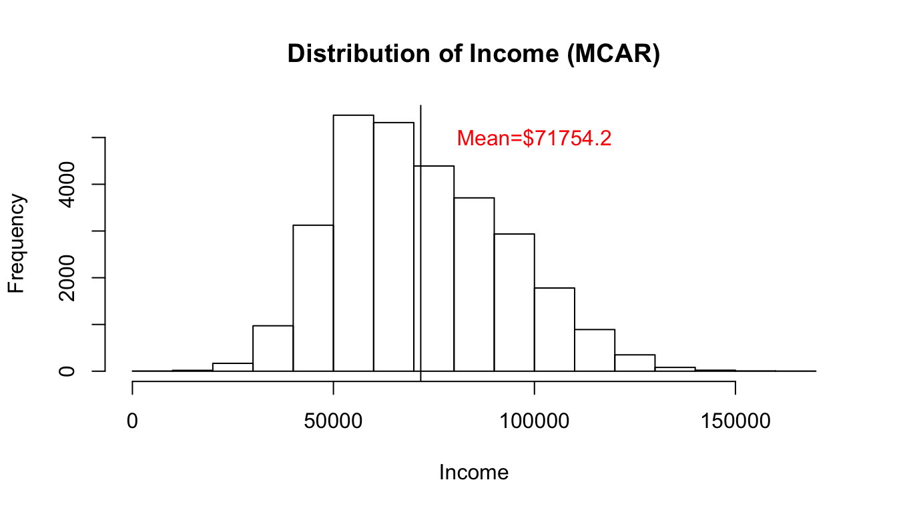

2.2 Statistical error
Statistical error is the difference between the estimate, produced by the data collection, and the unknown truth to the research question. The aim is to derive an estimate that is as close as possible to the “true value”. Differences between the estimate and the truth are driven by the bias and variance introduced in the statistical production cycle.
Variance is the range by which an estimate could vary across multiple iterations of a given design. If a sample survey were to be carried out with the aim of measuring the amount of money donated to charities, there would be a variation in the estimates from different samples of the same design. That is, including different people in the sample may produce different estimates of the amount donated. Some samples may underestimate, whilst some overestimate; as a result, selection error (also referred to as sampling error) can be expressed as the range by which estimates vary as a result of sample composition.
Bias is a consistent direction of difference between a parameter (i.e. true value) and its estimate across multiple iterations with a fixed design. In the example of the survey measuring charitable donations, there may be a consistent social desirability bias to overstate the amount donated. As a result, this measurement error can be expressed as the degree to which the survey design overestimates the amount that people donate to charities.
The examples above illustrated how the selection of units and measurement of variables can introduce variance and bias respectively. Selection error and measurement error are both referred to as error sources, as they introduce statistical error; introducing more uncertainty in whether the estimate captures the unknown “truth”. There are multiple error sources in the statistical production cycle; some of which impact the representation of the target population and some of which impact the measurement of the underlying construct.
2.2.1 Measurement error
Measurement error is the potential variation and bias introduced during collection. It could be the result of flaws in the collection instrument or due to how units provide responses. For example, people may mis-remember details or interpret questions differently from what was intended.
2.2.2 Missingness
Missingness can be a result of non-response or data loading issues, and can impact the representation of the target population. There are three different types of missingness. All types of missingness will introduce variance into the estimate. However, the risk of bias is different between the different types of missingness.
- Missing completely at random (MCAR)
- Missing at random (MAR)
- Missing Not at random (NMAR)
An income dataset is used to demonstrate the different types of missingness. It has three variables, age, sex and income. The age and sex variables were derived from the open Census Adult income dataset available on Kaggle. Whilst the income variable was derived so that males on average had a higher income than females. In demonstrating each type of missingness, the income variable was set to have a missing proportion of 30%, whilst age and sex were set to have no missingness. The code used to derive the income variable, along with the first five units of the dataset are presented below.
#Separate males and females to generate income
DataMale<-DataK[DataK$sex=="Male",]
DataFemale<-DataK[DataK$sex=="Female",]
#Create income for males and females
DataMale$IncomeN<-rnorm(1:nrow(DataMale),80000,20000)
DataFemale$IncomeN<-rnorm(1:nrow(DataFemale),55000,10000)
#Append males and females into one dataset
DataK_edit<-rbind(DataMale,DataFemale)| Age | Income | Sex | |
|---|---|---|---|
| 7 | 38 | 59033.18 | 2 |
| 10 | 41 | 111004.43 | 2 |
| 12 | 38 | 39915.39 | 2 |
| 14 | 32 | 114660.90 | 2 |
| 15 | 51 | 80755.32 | 2 |
MCAR is when the probability that a unit or item is missing is independent of the missing value and of the other characteristics of the respondent. That is, there are no systematic differences between respondents and non-respondents in terms of the missing variable, and any other available variable. As a result, there is a very low risk of bias with MCAR, if left unaddressed. The code below simulates MCAR with respect to income, in the Income dataset. The histograms demonstrate that there is little change in the mean and distribution of the income variable before and after simulating the missingness.
#Missing Completely at Random
MCAR<-ampute(DataK_editSub, prop=0.3, patterns=patterns, mech="MCAR")
MCAR_c<-MCAR$data
MCAR_m<-MCAR$amp
#Plot MCAR
MCARcompleteDis<-hist(MCAR_c$Income, main="Distribution of Income (complete data)", xlab="Income")
abline(v=mean(MCAR_c$Income))
text(100000,5500,"Mean=$71736.58",col="red")
MCARmissingDis<-hist(MCAR_m$Income, main="Distribution of Income (MCAR)", xlab="Income")
abline(v=mean(MCAR_m$Income, na.rm=TRUE))
text(100000,5000,"Mean=$71754.2",col="red") 

Figure 2.1: Figure 1. Histograms showing the distribution of income with complete and missing data, where pattern of missing is completely at random
MAR reflects instances where the probability that a unit or item is missing does not depend on the missing value but does depend on some other characteristics. With instances of MAR, there are no differences between responding and missing units with regards to the variable of interest. However, there are differences with regards to the other variables. For example, it may be the case that men are less likely to respond to the income item compared to women. If males tend to earn more than females, this may drive some of the differences between respondents and non-respondents. There is a risk of bias with MAR, if left unaddressed. Applying imputation by using the variables predictive of the variable of interest can manage the impact of bias on the final estimates.
The example below applies MAR with respect to the income variable; whereby missingness for this variable is related to the other variables in the dataset, age and sex. The mosaic plot below reveals that there was a greater proportion of missingness amongst males relative to females. The impact of MAR appears to be relatively minor; with small changes to the distribution and mean of income. However, these changes are greater than those observed for MCAR, which is consistent with what is known about the dataset and the menchanism of missingness. That is, as missingness is dependent on age and sex, and since males (in this dataset) had higher incomes relative to females, it is expected that if fewer males respond to the income item, this would underestimate income. As a result, there is a risk of bias with MAR, especially as the rate of missingness increases. However, this bias can be managed by using the variables predictive of missing item; in this example, estimates of Income could be derived using sex.
#Missing at Random
MAR<-ampute(DataK_editSub, prop=0.3, patterns=patterns, mech="MAR")
MAR_c<-MAR$data
MAR_m<-MAR$amp
#Plot MAR
MARcompleteDis<-hist(MAR_c$Income, main="Distribution of Income (complete data)", xlab="Income")
abline(v=mean(MAR_c$Income))
text(100000,5500,"Mean=$71736.58",col="red")
MARmissingDis<-hist(MAR_m$Income, main="Distribution of Income (MAR)", xlab="Income")
abline(v=mean(MAR_m$Income, na.rm=TRUE))
text(100000,4500,"Mean=71239.59",col="red")

Figure 2.2: Figure 2. Histograms showing the distribution of income with complete and missing data, where pattern of missing is random
Figure 2.3: Figure 3. Mosaic plot comparing proportion of missingness for the income variable between male and female respondents, where 1=Missing and 0=Non-missing
MNAR is when the probability of response depends on the missing value itself. For example, high income earners may be less likely to respond to the income item relative to low income earners. There is a risk of bias with MNAR, which can be difficult to manage as it is difficult to identify the mechanism of missingness, and there is insufficient information to advise the imputation of figures. The histograms below reveal that if missingness for Income is related to income itself, then there is a greater change observed in the distribution, relative to MCAR and MAR.
#Not Missing at Random
MNAR<-ampute(DataK_editSub, prop=0.3, patterns=patterns, mech="MNAR")
MNAR_c<-MNAR$data
MNAR_m<-MNAR$amp
#Plot MNAR
MNARcompleteDis<-hist(MNAR_c$Income, main="Distribution of Income (complete data)", xlab="Income")
abline(v=mean(MNAR_c$Income))
text(100000,5500,"Mean=$71736.58",col="red")
MNARmissingDis<-hist(MNAR_m$Income, main="Distribution of Income (MNAR)", xlab="Income")
abline(v=mean(MNAR_m$Income, na.rm=TRUE))
text(100000,5500,"Mean=$70296.97",col="red")

Figure 2.4: Figure 4. Histograms showing the distribution of income with complete and missing data, where pattern of missing is not at random